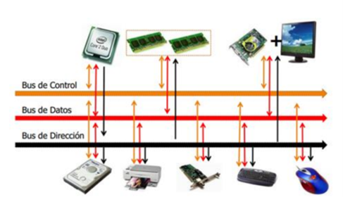
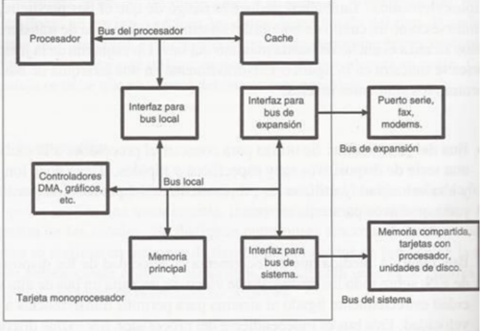
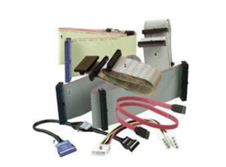
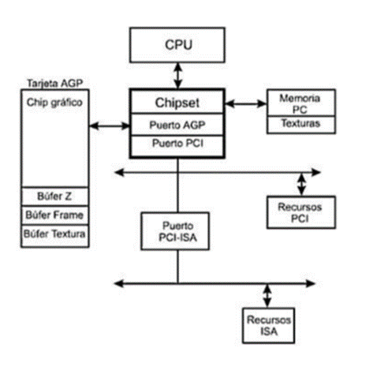

1.2.1.4 Buses
Existen dos tipos primordiales de buses (conexiones) para el
envío de la información: bus paralelo o serial.
Hay diferencias en el desempeño y hasta hace unos años se
consideraba que el uso apropiado dependía de la longitud
física de la conexión: para cortas distancias el bus paralelo,
para largas el serial.
Bus paralelo
Es un bus en el cual los datos son enviados por
bytes al mismo tiempo, con la ayuda de varias líneas que
tienen funciones fijas. La cantidad de datos enviada es
bastante grande con una frecuencia moderada y es igual al
ancho de los datos por la frecuencia de funcionamiento. En
los computadores ha sido usado de manera intensiva, desde
el bus del procesador, los buses de discos duros, tarjetas de
expansión y de vídeo hasta las impresoras.
Bus serie
En este los datos son enviados, bit a bit y se
reconstruyen por medio de registros o rutinas de software.
Está formado por pocos conductores y su ancho de banda
depende de la frecuencia. Es usado desde hace menos de 10
años en buses para discos duros, tarjetas de expansión y para
el bus del procesador.
Buses del procesadror.
Bus de Direcciones: Es unidireccional debido a que la
información fluye es una solo sentido, del CPU a la memoria
ó a los elementos de entrada y salida.
El CPU puede colocar niveles lógicos en las n líneas de
dirección, con la cual se genera 2n posibles direcciones
diferentes. Cada una de estas direcciones corresponde a una
localidad de la memoria ó dispositivo de E / S.
El procesador envía un código de dirección a la memoria o a
otro dispositivo externo. El tamaño o anchura del bus de
direcciones está especificado por el número de hilos
conductores o pines.
Bus de Datos
Es bidireccional, pues los datos pueden fluir
hacia ó desde el CPU.Las terminales pueden ser entradas ó
salidas, según la operación que se este realizando ( lectura ó
escritura ).En todos los casos, las palabras de datos
transmitidas tiene m bits de longitud debido a que el CPU
maneja palabras de datos de m bits; del número de bits del
bus de datos, depende la clasificación del procesador.En
algunos procesadores, el bus de datos se usa para transmitir
otra información además de los datos.Es compartido en el
tiempo ó multiplexado. Transfieren datos o códigos de
instrucción hacia el procesador o se envían hacia el exterior
los resultados de las operaciones o cálculos.

Bus de Control
Este conjunto de señales se usa para
sincronizar las actividades y transacciones con los
periféricos del sistema. Algunas de estas señales, como
Lectura o Escritura R / W , son señales que el CPU envía
para indicar que tipo de operación se espera en ese momento.
Los periféricos también pueden remitir señales de control al
CPU, como son INT, RESET, BUS RQ.
Las señales más importantes en el bus de control son las
señales de cronómetro, que generan los intervalos de tiempo
durante los cuales se realizan las operaciones. Este tipo de
señales depende directamente del tipo del microprocesador.
El procesador para coordinar sus operaciones y para
comunicarse con los dispositivos externos. El bus de control
dispone de señales que permiten leer y escribir datos en
memoria o realizar una operación de Entrada/Salida en el
instante adecuado.
Tecnología de buses.
Un bus se puede definir como una línea de interconexión
portadora de información, constituida por varios hilos
conductores (en sentido físico) o varios canales (en sentido
de la lógica), por cada una de las cuales se transporta un bit
de información. El número de líneas que forman los buses
(ancho del bus) es fundamental: Si un bus está compuesto
por 16 líneas, podrá enviar 16 bits al mismo tiempo.
Los buses conectan toda la circuitería interna. Es decir, los
distintos subsistemas del ordenador intercambian datos
gracias a los buses. Podemos clasificar a los buses, según el
criterio de su situación física:
Bus Interno
Este mueve datos entre los componentes
internos del microprocesador.
Bus local
De alta velocidad que conecta el procesador a la
caché, el controlador de la caché también puede acceder al
bus del sistema, con esta implementación, la mayor parte de
los datos a los que va a acceder el procesador, que están en la
caché, serán entregados a una alta velocidad, otro punto a
destacar de esta parte es que los accesos a memoria por parte
de la caché no van a interrumpir el flujo de datos entre
procesador y caché. También se ve la posibilidad de
conectar un dispositivo de entrada salida al bus local.
Bus del sistema
En el está conectada la memoria y por
debajo el bus de expansión, al cual se pueden conectar una
amplia diversidad de dispositivos, entre el bus del sistema y
el bus de expansión se encuentra una interface, que entre las
principales tareas está la de adaptar las velocidades de
transmisión, por ejemplo para un dispositivo muy lento
conectado al bus de expansión la interface podría acumular
una cierta cantidad de datos y luego transmitirla a través del
bus del sistema.

Bus de expansión, más lento conectado mediante otro
adaptador.
Todas las partes del microprocesador están unidas mediante
diversas líneas eléctricas. El conjunto de estas líneas se
denominan bus interno del microprocesador. Por este bus
interno circulan los datos (bus de datos), las señales de
control (bus de control) o las direcciones de memoria (bus de
direcciones). Cuando se habla de un microprocesador de 32
bits, el número de líneas del bus interno es de 32.
Bus Externo
Este se utiliza para comunicar el procesador y
otras partes, como periféricos y memoria.
Buses ISA (Industry Standard Arquitecture).
Las primeras computadoras personales estaban equipadas
con ranuras de 8 bits, que para la velocidad de aquellos
procesadores eran suficiente. Actualmente son lentas para los
procesadores que existen.
Buses EISA(Extended Industry Standard Arquitecture).
Arquitectura estándar industrial extendida. Tiene
características de la ISA en cuanto a su compatibilidad pero
con la velocidad de MCA es decir, 32 bits.
Buses VESA(Video Electronic Standard Asociation).
Son una extensión de ISA. Incluye toda la tecnología de
EISA, funcionan al ritmo del procesador y permiten la
transferencia de datos sin necesidad de que estos intervengan
permitiendo procesos mucho más rápidos y dejando mayor
tiempo libre al microprocesador central.

Buses PCI (Peripheral Component Interconect).
Interconexión a componentes perimetrales. Es de
características similares a VESA, pero se distingue porque la
conexión del bus con el microprocesador se efectúa por
intermedio de un chip adicional que simplifica y suprime las
limitaciones de la conexión directa.
Bus AGP (Advanced Graphics Port).
Puerto Avanzado de Gráficos. Se trata de un nuevo sistema
para conectar periféricos en la placa base de la computadora,
bus por el que van datos del procesador a los periféricos.
CardBus y PC Card (comúnmente PCMCIA)

Buses multiplexados básicos
En las computadora, el microprocesador controla (y se
comunica con) las memorias y los dispositivos de
entrada/salida (E/S) a través de la estructura de bus interna.
El bus está multiplexado de manera que cualquiera de los
dispositivos que están conectados al mismo pueda enviar o
recibir datos hacia o desde los otros dispositivos.
Señales del bus. Utilizando la técnica de control síncrono del
bus, el microprocesador suele ser el encargado de generar
todas las señales de temporización y control. Entonces, los
otros dispositivos sincronizan sus operaciones con dichas
señales de control y temporización. Con la técnica de control
asíncrono del bus, las señales de control y temporización son
generadas conjuntamente por un origen y destino.